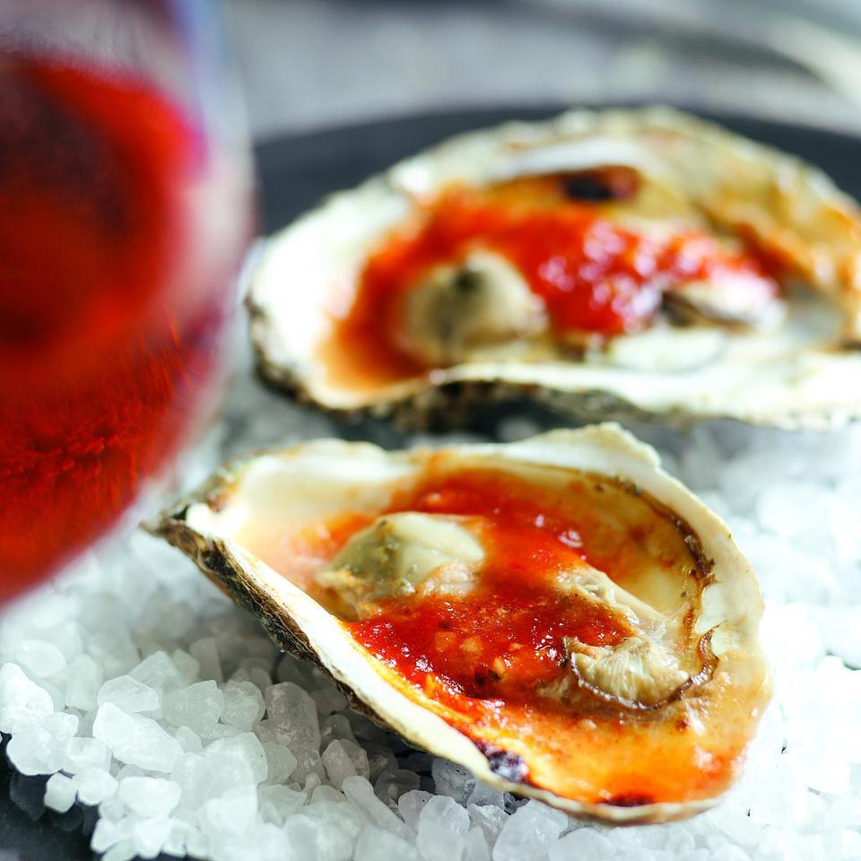

Spicy Barbecued Oysters

Description
If you're intimidated by shucking oysters--this recipe for barbecued oysters is for you. When you grill them, steam builds up inside the shells until they pop open. Then you slather a little garlicky red barbecue sauce on each oyster, put them back on the grill to get hot and bubbly, and you're done. At a party, bring your oysters to the grill and show your guests how it's done so they can barbecue their own.
Ingredients
- 3 tbsp Unsalted Butter
- 1 tbsp Minced Garlic
- 5 tbsp Mild Chili Sauce
- ½ tsp Hot Sauce
- 3 tbsp Lemon Juice
- 24 Large Oysters
Steps
- Preheat grill to medium-high.
- Melt butter in a small saucepan over medium heat. Add garlic and cook, stirring, until it softens, about 1 minute. Remove from heat and stir in chili sauce (or ketchup), lemon juice and hot sauce.
- 3 tbsp Butter
- 1 tbsp Minced Garlic
- 5 tbsp Chili Sauce
- 3 tbsp Lemon Juice
- 1/2 tsp Hot Sauce
- Bring oysters along with the sauce, a cutting board, an oven mitt, tongs and an oyster knife (or other small knife) to the grill.
- Place oysters flat-side up on the grill rack. Close the lid and grill until the top shell pops open, 3 to 5 minutes. Transfer the oysters to the cutting board with tongs, keeping them as level as possible so the oyster "liquor" (salty seawater) doesn't spill out.
- Wear the oven mitt to hold the oyster and use the knife to remove the top shell, cutting the oyster away from the top shell and leaving it in the bottom shell. Periodically wipe your knife clean. Discard the top shells. Spoon about 1 teaspoon sauce onto each oyster. Return the oysters to the grill, close the lid and grill until the sauce is bubbling, 2 to 4 minutes more. Serve with small forks.